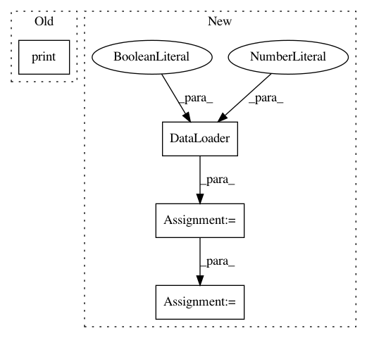

3e11eb52b9b370bf9df6bf396e91ef94bf4055b8,examples/mnist_superpixel_75.py,,,#,6
Before Change
input, adj, position = data
print(input.size())
print(len(adj))
print(len(position))
print(adj[0].size())
After Change
path, train=False, transform=Compose([Graclus(2), PolarAdj()]))
train_loader = DataLoader(train_dataset, batch_size=100, shuffle=True)
test_loader = DataLoader(test_dataset, batch_size=128, shuffle=True)
for batch, ((input, adj, position), target) in enumerate(test_loader):
print(batch)
// print(len(target))
// print(input.size())
// print("aa", adj[0][1].size())
// print(adj[0][1])
In pattern: SUPERPATTERN
Frequency: 3
Non-data size: 4
Instances
Project Name: rusty1s/pytorch_geometric
Commit Name: 3e11eb52b9b370bf9df6bf396e91ef94bf4055b8
Time: 2017-11-02
Author: matthias.fey@tu-dortmund.de
File Name: examples/mnist_superpixel_75.py
Class Name:
Method Name:
Project Name: modAL-python/modAL
Commit Name: caec2c73aad40c0e632e978964ec5c3cf4773c9e
Time: 2019-06-02
Author: theodore.danka@gmail.com
File Name: examples/pytorch_integration.py
Class Name:
Method Name:
Project Name: mozilla/TTS
Commit Name: 3c084177c661ec10c5442b4305930bf3057fe97b
Time: 2018-03-26
Author: egolge@mozilla.com
File Name: tests/loader_tests.py
Class Name: TestDataset
Method Name: test_padding